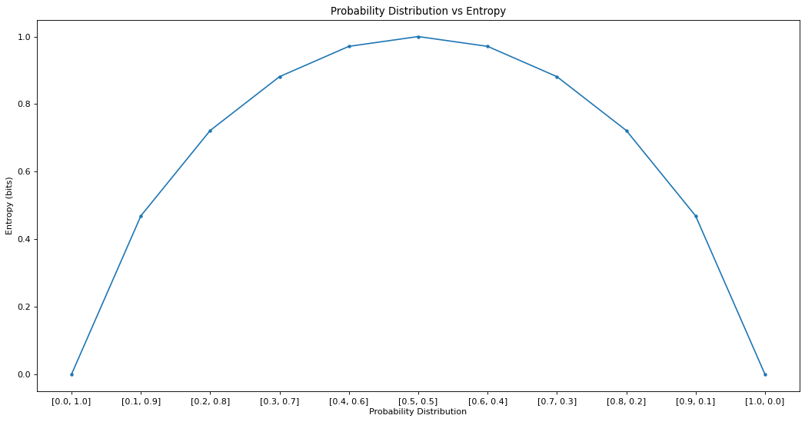

Entropy and information gain
Introduction
Entropy will appear in two areas of Machine Learning:
- Entropy and Information Gain in Decision Trees.
- Entropy as a Loss Function
Entropy in Decision Trees
Please read entropy-how-decision-trees-make-decisions first. If you are like me, who touched on Entropy as a loss function, then it is slightly confusing for the entropy here. Entropy is a measure of disorder and chaos.
Definition (Entropy)
In information theory, the entropy of a random variable is the average level of \"information\", \"surprise\", or \"uncertainty\" inherent to the variable\'s possible outcomes. Given a discrete random variable \(Y\), with possible outcomes \(y_1, ..., y_n\), which occur with probability
the entropy of \(Y\) is formally defined as:
where \(\Sigma\) denotes the sum over the variable\'s possible values. The choice of base for \(\log\), the logarithm, varies for different applications. Base 2 gives the unit of bits (or \"shannons\"), while base e gives \"natural units\" nat, and base 10 gives units of \"dits\", \"bans\", or \"hartleys\". An equivalent definition of entropy is the expected value of the self-information of a variable.
Intuition (Entropy and Information Theory)
From Wikipedia: Consider making my own example to reinforce concept.
Intuitively, if we are predicting an image of a cat vs dog, and we pass in a query image \(x_{q}\) of pixels, we expect the \(y_{q}\) to take on class 0 or 1. However, taking a step back, in ML setting, we often have a calibrated probability \(y_{q}\) before the classifier tells us whether it is a 0 or 1 based on a decision (say if probability more than 0.5, then its 1, and 0 otherwwise). This probability is a soft label and in our scenario, should output an array
y_q = [probability of x_q being a cat 0, probability of x_q being a dog 1] = [0.5, 0.5]
In this case, we can say that our prediction \(Y\) is a DISCRETE random variable with probability distribution \(p\), and thus the entropy of \(Y\) can be formally defined as:
where we are summing over all values that \(Y\) took on.
In this case, it is
entropy of y_q = -( 0.5 * lg 0.5 + 0.5 * lg 0.5 ) = -(-0.5 + -0.5) = 1
Note we are using lg base 2 here and so our maximum entropy is 1.
- Entropy is maximum if each random variable is equi-probable.
- Entropy Loss is usually used as a loss function in ML as it penalizes "wrong predictions" and favours confident predictions.
In the image below, let's say \(Y\) is a random variable taking on a uniform distribution, for example, if we are predicting a cat or dog image, where \(y\) is the probability output from a classifier, taking on 0 to 1. If we were to assume \(y \sim U[0,1]\), then it follows that \(H(y) = 1\) as \(y\) will always be of \([0.5, 0.5]\) in prediction.
Let us now see two different cases if \(y\) follows a gaussian distribution, \(y_{1} \sim \mathcal{N_1}[0,1]\) and \(y_{2} \sim \mathcal{N_2}[0,1]\)
Visually, we can see that the second gaussian has a higher peak than the first, hence we can deduce that \(H(y_{2}) < H(y_{1})\) because since the higher peak suggest that the points of \(y_{2}\) are tightly spread around each other, and since the points are close, there is less penalty in the \(\log\). Even more geometrically, if we take "uniform distribution" as the one with highest entropy, we can say that as the gaussian curve smoothes out -> becoming more uniform, then the entropy rises.

Fig; By Hongnan G.
Python Code (Entropy in Information Gain)
from math import log2
from typing import *
from typing import List
import numpy as np
import scipy
Given a list of labels, (i.e. ground truth labels of 5 images of cats and dogs):
- Ground Truth Labels:
['dog', 'dog', 'cat', 'cat', 'dog'] = [0, 0, 1, 1, 0] - Class Probabilities: Note carefully in this entropy context, this class probabilities IS NOT the softmax activation, instead, it is just the FREQUENCY of each class.
[3/5, 2/5]where dog has frequency of \(\frac{3}{5}\) and cat \(\frac{2}{5}\).
from math import log2
from typing import *
from typing import List
import numpy as np
import scipy
def compute_class_probabilities(labels: List[Any]) -> List[float]:
"""Calculate frequency of each class.
From DSFS book, it mentions that we do not actually care about which label is associated with which probability. Thus it is okay to use a dictionary which does not preserve order.
Args:
labels (List[Any]): The labels of the data.
Returns:
label_probs (List[float]): The frequency of each class.
Example:
>>> labels = ['dog', 'dog', 'cat', 'cat', 'dog'] = [0, 0, 1, 1, 0]
>>> assert compute_class_probabilities(labels) == [2/5, 3/5] or class_probabilities(labels) == [3/5, 2/5]
"""
num_samples = len(labels)
label_count: Dict = {}
label_probs: List = []
for label in labels:
if label not in label_count:
label_count[label] = 1
else:
label_count[label] += 1
for label, count in label_count.items():
label_probs.append(count / num_samples)
return label_probs
def compute_entropy_with_class_probability(
class_probabilities: List[float],
epsilon: float = 1e-15,
log_base: int = 2,
) -> float:
"""The formula for entropy is:
$$\mathrm{H}(Y)= -\sum _{i=1}^{n}{\mathrm{P}(y_{i})\log \mathrm{P}(y_{i})}$$
Args:
class_probabilities (List[float]): Frequency probability of class occurences.
Returns:
entropy (float): The entropy of the dataset.
Example:
>>> # maximum chaos -> entropy = 1
>>> class_probabilities = [1/2, 1/2]
>>> assert compute_entropy_with_class_probability(class_probabilities) == 1
>>> # minimum chaos -> entropy = 0
>>> class_probabilities = [1, 0] # or [0, 1]
>>> assert np.isclose(compute_entropy_with_class_probability(class_probabilities), 0)
>>> class_probabilities = [2/5, 3/5]
>>> assert compute_entropy_with_class_probability(class_probabilities) == 0.9709505944546686
"""
assert (
np.sum(class_probabilities) == 1
), f"Probabilities do not sum to 1 and is {np.sum(class_probabilities)}!"
assert log_base in [
2,
10,
], f"log_base must be either 2 or 10. Got {log_base}!"
if log_base == 2:
log_fn = getattr(np, "log2")
else:
log_fn = getattr(np, "log10")
entropy = 0
for y in class_probabilities:
if y == 0:
y = epsilon
entropy += y * log_fn(y)
entropy = -1 * entropy
return entropy
def compute_entropy_with_class_labels(
labels: List[Any], *args, **kwargs
) -> float:
"""Compute the entropy of the dataset given class labels.
Args:
labels (List[Any]): The labels of the data.
Returns:
entropy (float): The entropy of the dataset.
Example:
>>> from scipy.stats import entropy
>>> labels = [0, 0, 1, 1, 0] # ['dog', 'dog', 'cat', 'cat', 'dog']
>>> # Note scipy's entropy takes in class freq
>>> np.isclose(compute_entropy_with_class_labels(labels=labels, epsilon=1e-15, log_base=2), entropy([3/5, 2/5], base=2))
"""
return compute_entropy_with_class_probability(
compute_class_probabilities(labels), *args, **kwargs
)
>>> # maximum chaos -> entropy = 1
>>> class_probabilities = [1/2, 1/2]
>>> assert compute_entropy_with_class_probability(class_probabilities) == 1
>>> # minimum chaos -> entropy = 0
>>> class_probabilities = [1, 0] # or [0, 1]
>>> assert np.isclose(compute_entropy_with_class_probability(class_probabilities), 0)
>>> class_probabilities = [2/5, 3/5]
>>> assert compute_entropy_with_class_probability(class_probabilities) == 0.9709505944546686
>>> from scipy.stats import entropy
>>> labels = [0, 0, 1, 1, 0] # ['dog', 'dog', 'cat', 'cat', 'dog']
>>> # Note scipy's entropy takes in class freq
>>> np.isclose(compute_entropy_with_class_labels(labels=labels, epsilon=1e-15, log_base=2), entropy([3/5, 2/5], base=2))
True
Entropy Graph vs Different Class Distributions
We see that the Entropy of each point in the plot below, and find that on the extreme, [0, 1] and [1, 0], our entropy is the lowest with 0. The plot below is akin to our dataset having 2 distinct classes, but with different class frequencies.
Consider a dataset with 10 cats and dogs (0 and 1 respectively), then the scenario below illustrates:
[0, 1]represents there are 0 cats and 10 dogs. This dataset is considered pure and has 0 entropy. Think of it as easy for us to distinguish cats and dogs in a dataset with only dogs.[0.1, 0.9]represents 1 cats and 9 dogs. The entropy is a little higher since we need to spend some effort to distinguish the 1 cat from 9 dogs.[0.5, 0.5]represents 5 cats and 5 dogs. The entropy is highest here and the most impure since there is an equal mixture and distribution of cats and dogs.[1, 0]similar case to[0, 1].
# Reference to machine learning mastery
# compare probability distributions vs entropy
from math import log2
from matplotlib import pyplot
from matplotlib.pyplot import figure
figure(figsize=(16, 8), dpi=80)
# calculate entropy
def entropy(events, ets=1e-15):
return -sum([p * log2(p + ets) for p in events])
# define probabilities
probs = [0.0, 0.1, 0.2, 0.3, 0.4, 0.5, 0.6, 0.7, 0.8, 0.9, 1.]
# create probability distribution
dists = [[round(p, 1) , round((1.0 - p), 1)] for p in probs]
# calculate entropy for each distribution
ents = [entropy(d) for d in dists]
# plot probability distribution vs entropy
pyplot.plot(probs, ents, marker='.')
pyplot.title('Probability Distribution vs Entropy')
pyplot.xticks(probs, [str(d) for d in dists])
pyplot.xlabel('Probability Distribution')
pyplot.ylabel('Entropy (bits)')
pyplot.show()

Entropy as a loss function
Read more in the section cross_entropy_loss.
- machinelearningmastery-information-entropy
- analytics-vidhya-entropy-loss
- cross-entropy-loss-machine-learning-mastery
- entropy-how-decision-trees-make-decisions
- https://ramsane.github.io/articles/cross-entropy-explained-with-entropy-and-kl-divergence
- https://neptune.ai/blog/cross-entropy-loss-and-its-applications-in-deep-learning